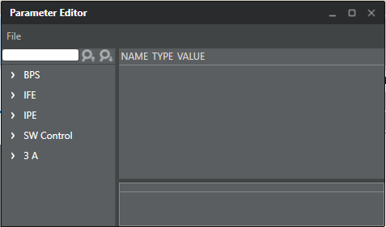

Parameter Editor dialog
box.Parameters that are not accessible in ISP tuning menus can be edited
directly in the
-
With the tuning project open in Chromatix, click Utilities, then click Parameter Editor.

-
Expand the applicable pipeline from the list (e.g., BPS, IFE,
IPE, or 3A) in the parameter tree along the left-hand side of the dialog box.
-
Expand the applicable module tree to edit parameters.
| Common Navigation |
Controls |
| Expand navigation
tree |
Click top-most
tree to expand + E |
| Collapse
navigation tree |
Click top-most
tree to collapse + C |
-
Click a specific editable field to make adjustments.
Changes are saved as edits are made.